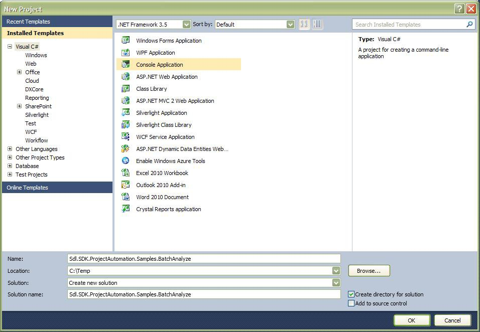

Setting up the Visual Studio Project
Start by creating a new console Application in Microsoft Visual Studio 2010.
Create a Console Application project called Sdl.SDK.ProjectAutomation.Samples.BatchAnalyze.

Add the following libraries as references to your project:
- Sdl.Core.Globalization.dll
- Sdl.Core.Settings.dll
- Sdl.ProjectApi.dll
- Sdl.ProjectAutomation.Core.dll
- Sdl.ProjectAutomation.FileBased.dll
- Sdl.ProjectAutomation.Settings.dll
In addition you also require the following references from the Translation Memory API:
- Sdl.LanguagePlatform.Core.dll
- Sdl.LanguagePlatform.TranslationMemory.dll
- Sdl.LanguagePlatform.TranslationMemoryApi.dll
Note that we require the functionality of the Translation Memory API to access information on the selected TM, i.e. the source / target language combination. Note that this is a case in point of how the Project Automation API and the Translation Memory API are sometimes required to be leveraged both to implement the functionality of your applications.
Make sure to set the project build output location to the Trados Studio installation folder, e.g. C:\Program Files\SDL\SDL Trados Studio\Studio16\. Important note: Set the platform target of your projects to x86.